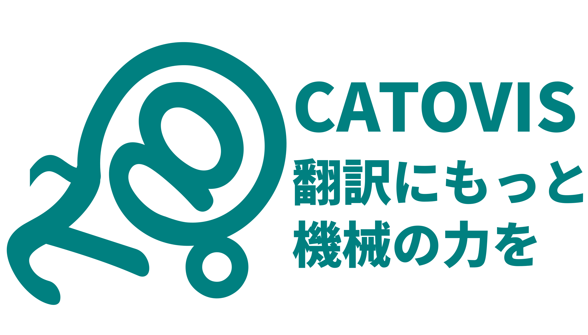

# こちらITソリューション部
# @ ゴールデンブリッジ
翻訳会社 ゴールデンブリッジの中の人です。 翻訳・チェックのかたわら、パソコンをいじっています。
このサイトには、翻訳・チェックする過程で、中の人が
- 試したこと
- 学んだこと
- 作ったもの
などを書き込んでいきます。
かなりニッチなPC操作や、専門である中国語関連のネタが多くなると思います。 興味のある方も、そうでない方も、どうぞ温かい目で見守って、 そしてお気に入り登録してください。
最新記事はこちら(2020年9月28日)
2020/9/15 翻訳作業支援用Webアプリ CATOVIS SUITE公開中！
2020/9/28 翻訳プロセスオートメーションについて本気で考えてみた（その１）
2020/9/29 AmiVoiceで音声認識からSRTファイル作成まで
# このサイトについて
このサイトはOSSであるVuepressとVuepress-plugin-blogを使って作成しています。
非常に有用なツールを公開していただいたこと、感謝するとともに、弊社もOSSの発展に微力ながら貢献していきたいと思います。
ライセンスについて
# 運営

| 会社名 | 株式会社ゴールデンブリッジ |
|---|---|
| 事業内容 | 多言語通訳翻訳 インバウンド交流事業（日中ビジネス交流プログラム、医療美容ツアー） 有料職業紹介、その他上記に付随するサービス |
| 設立 | 2002年 8月 |
| 所在地 | 【大阪本社】 〒550-0005 大阪市西区西本町1丁目7番7号CE西本町ビル801号室 【東京オフィス】 〒160-0023 東京都新宿区西新宿1丁目5番11号 新宿三葉ビル5階 505 |
| 開発中ツール |  |
# 著者
電氣羊 | 羊と羊毛と羊肉が大好き。 プログラマの三大美徳「怠惰」「短気」「傲慢」に感銘を受け、プログラミングを学ぶ。 「楽＝高品質」を掲げ、今日も楽をするために苦労している。 |
|---|